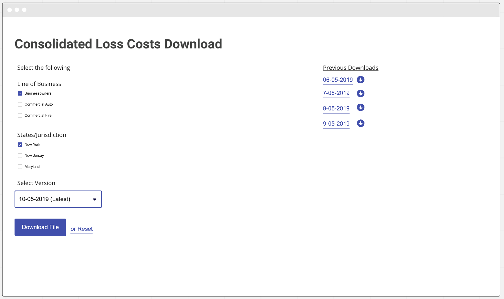
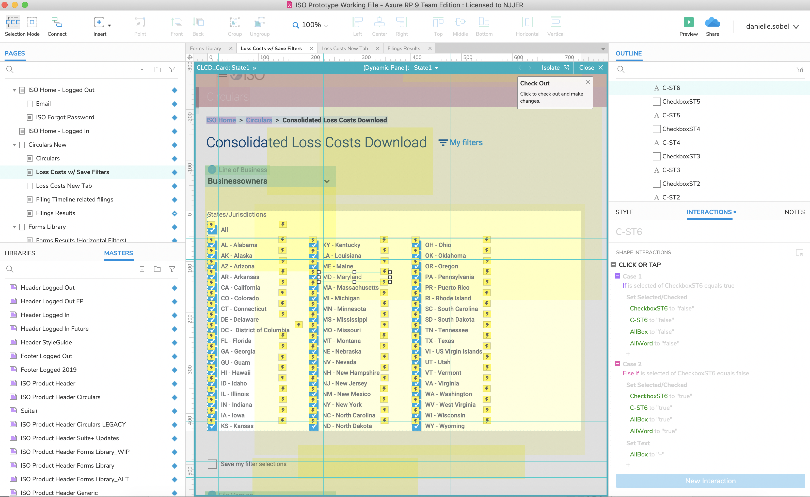
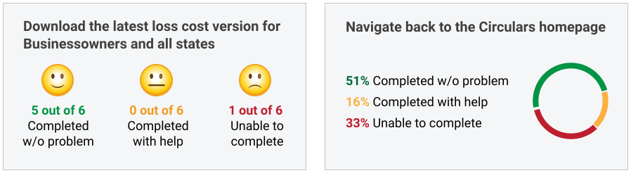

Verisk
Product: Consolidated Loss Costs Download
Password: Verisk1
My Role | Lead UX Designer & Researcher
Tools | Axure, Sketch
Research Methods | Survey, Remote Contextual Interviews, Usability Testing
Date | 2021

"It makes this task more doable and overtime helps me not to hire an additional person. It looks like an expense savings on our side.
-User from Attune Insuance
Background:
Before this product, our users were not able to access Loss Cost
information for multiple states in a Line of Business at the same time. They needed to create their own spreadsheets and
sift through multiple PDF documents to get the information they need which takes a ton of time.
Our Solution:
The solution was to allow customers to obtain state-level loss cost data
in one file, by line of business, for all states in which they participate.

Empathize: Voice of the Customer
During VOC studies, UX can help elicit, organize, and parse feedback via user analytics, customer support, emails, posts,
customer surveys, contextual inquiries, etc. into logical themes to determine business value, bug fixes
and identify metrics for revenue growth and cost savings. I conducted a Medallia Survey and individual remote interviews with 5 users.
Define:
At this stage we clearly develop measurable goals, KPI's and PI's as a team.
Ideate: Whiteboarding Workshop
I faciliated a collaborative workshop to generate ideas from a theme with the development team and leadership.
One of the benefits of ideation is that it promotes collaboration to help resolve user pain points. After the workshop we all agreed on this basic wireframe.

Prototype: Axure
I designed a rapid interactive prototype in Axure for the purpose of testing theme(s) and hypotheses
by using design best practices. The cool thing about prototyping in Axure is that we don't need to develop something
in order to test. The Axure Share web enviroment looks exactly how a developer would
develop it and all the interactions work too! This way, hopefully, after we test and iterate there will be less technical/development debt in the
future.

"The process is quite smooth and easy to access different things. We don't need to give
training to someone to do this. This is quite straight forward."
-User from AIG, Banglore India
Validate: a heuristic evaluation with six users
I facilitated a qualitative usability study with selected users 1-on-1. Product team
and stakeholders observed and took notes to provide insights on the design and user behaviors.
We selected a range of participants from Munich Re, Attune, Liberty Mutual, AIG,
AIG Banglore, and WR Berkley. I created a script that helped me figure out
what I would like to test and ask the users. I asked a few preliminary questions such as how often they are downloading
the file, what their process is when they receive the file, and what do they do when they open it.
One thing we wanted to learn was whether our users were saving the files on their machines.
By asking these questions, we found out that they save their files on their companies cloud
space because they are important to them.
We also learned from our usability tests that this product made customer workflows faster and helped them reduce errors when processing and analyzing
loss costs data. Before users needed to scrape PDFs for the information. The results were less manual labor, fewer errors, and more flexibility and efficiently using ISO data.
Overall, our users were happy to have this product.
And Scoring, I evaluated each of the users that participated in usability testing
using the method below:
1 Completed with help
2 Unable to Complete
| Screen | Expected Response | Munich Re | Attune | Liberty Mutual | AIG | AIG, India | WR Berkley |
|---|---|---|---|---|---|---|---|
| Circulars home no filters | {Clicks "OK" on the call out or the CLCD tab} | 0 | 0 | 0 | 2 | 0 | 0 |
| CLCD no filters | {Acknowledges that BP is selected} | 0 | 0 | 0 | 2 | 0 | 0 |
| CLCD no filters | {Acknowledges that all states are already selected} | 0 | 0 | 0 | 1 | 0 | 0 |
| CLCD no filters | {Acknowledges that the latest is already selected} | 0 | 0 | 0 | 0 | 0 | 0 |
| CLCD no filters | {Clicks the "I" icon to see more information about version} | 2 | 0 | 1 | 2 | 2 | 0 |
| CLCD no filters | {Clicks the download button} | 0 | 0 | 0 | 0 | 0 | 0 |
| CLCD no filters save dialogue box | {Clicks the save button on dialogue box} | 0 | 0 | 0 | 0 | 0 | 0 |
| CLCD no filters | {Navigates to the circulars home page} | 2 | 0 | 0 | 2 | 1 | 0 |
Outcome: These were the most important themes learned. Participants were able to use the fields to search for the loss cost information. Once they were finished getting the information they needed and wanted to go back to the prior page, most figured it out even the first time.

Next steps
The project went into development soon after usability testing. I sat and contributed in all Agile sprint ceremonies
until the final UX sign off. Right now, each of the files that the user can download are being
created manually by a team in Verisk. This is very time consuming. Going forward development is
working on a way that we don't need to continue to do such manual work so the file can just be
delivered live rather than monthly. Also we are tracking the application using Adobe Analytics
which helps us learn from our users usage.